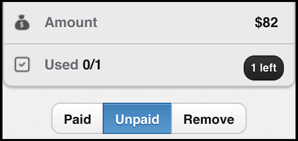

Track session usage
If a client selected a 10 session package from you, click on Check in to reduce it to 9.
At each session, use this feature to track your client's session usage.
Click on Gift one to increase it back to 10!
Track payment status

When a client selects a package, it is first set to Unpaid.
Change to Paid when you receive cash payment.
When there are no sessions left in a package, the package will be moved to History. You can also manually move a client's package to History at any time by clicking on Remove.